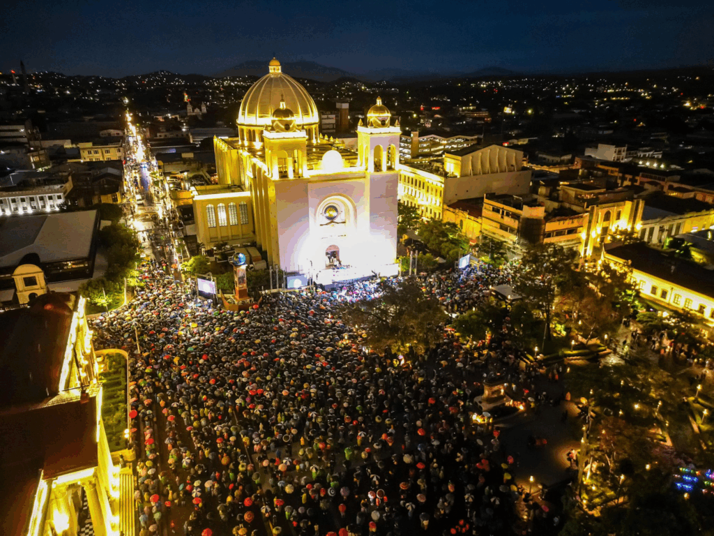

La Bajada
Uno de los momentos religiosos más importantes de las Fiestas Agostinas es la tradicional Bajada del Divino Salvador del Mundo. Esta ceremonia representa la Transfiguración de Jesús y reúne a numerosos fieles en el centro de San Salvador.